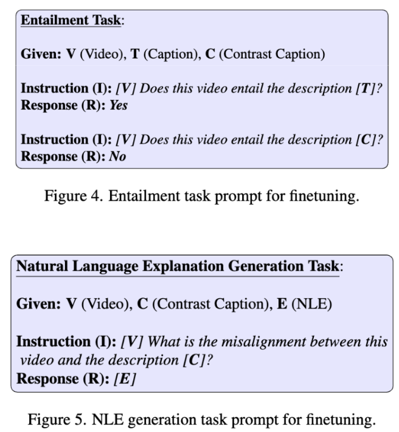

Pipeline
Overview of our VideoCon Approach. We propose “VideoCon”, a video-language dataset consisting of LLM-generated contrast captions for a wide range of misalignments. It is a scalable and active strategy to gather high-quality contrast data instead of collecting more web-scale data.

Temporally Extensive Dataset
Firstly, we make our dataset temporally-extensive by filtering the video-text pairs where the text has a high semantic similarity with one of the video frames. The presence of such examples don’t encourage strong video-centric learning.

LLM-Assisted Dataset Collection
We prompt LLM (PaLM-2) to generate contrast captions and natural language explanations.

Distribution of Misalignments
The dataset covers a wide range of misalignments. We present the distribution here.

Human-generated Data
We collect human-generated contrast captions and natural language explanations to evaluate the models.

Finetuning
We finetune a single generative video-text language model (mPLUG-Owl-Video) for the video-language entailment (whether text is grounded in the video) and natural language explanation generation task with their specific prompts. We refer to this model as Owl-Con.

Performance on Video-Language Entailment Task
Owl-Con outperforms all baseline models, achieving the top ROC-AUC score in video-language entailment. Specifically, it generalizes to unseen videos (sourced from a different distribution as VideoCon-LLM) and human-curated contrast captions.

Performance on Natural Language Explanation Generation
We show that Owl-Con outperforms the baseline model by achieving high entailment score btw. the ground-truth NLE and generated NLE. In the future, we hope that our model could be used to provide dense feedback to the generative models (üìΩÔ∏è->‚úçÔ∏è or ‚úçÔ∏è->üìΩÔ∏è).
Zero-shot Text-to-Video Retrieval
We evaluate the Owl-Con on zero-shot Text to Video Retrieval tasks (SSv2-Temporal and SSv2-Events). Our model achieves SOTA performance on these datasets, highlighting the usefulness of training with a high-quality VideoCon dataset.
Zero-shot Video Question Answering
Finally, we also show that Owl-Con achieves SOTA performance on the zero-shot video question answering dataset (ATP-Hard) which requires high temporal and causal understanding of the video-text data.